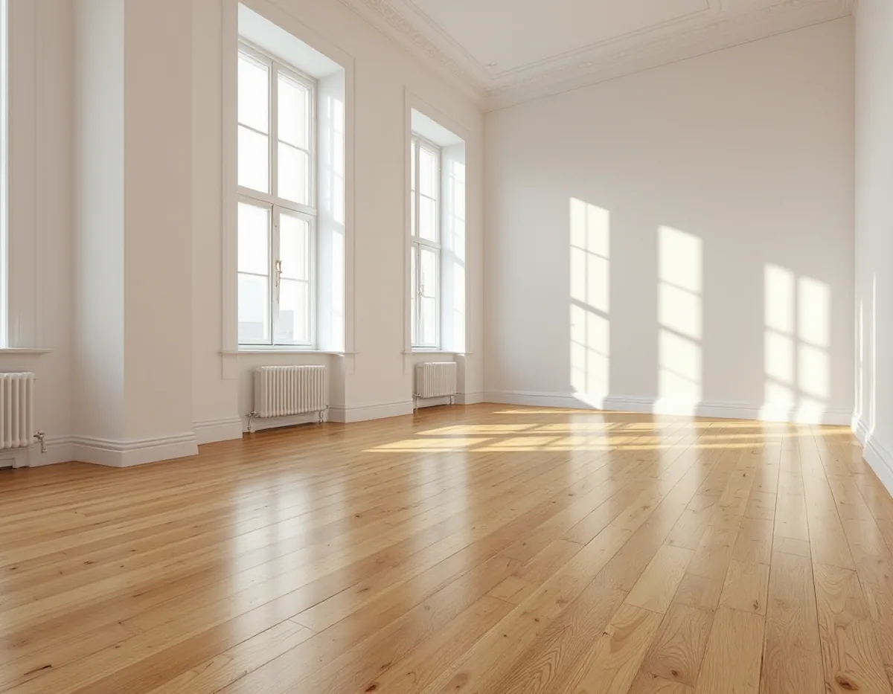
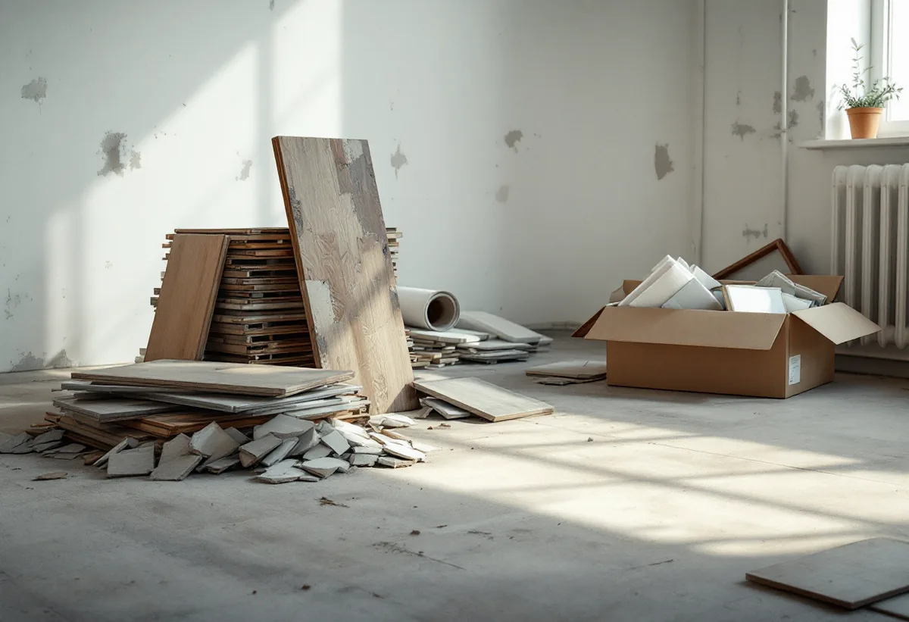

Platsbesök
Vi tittar på golvet, slitskiktet och vad som ligger under ytan.
Innan ett golv rivs ut är det värt att fråga om det behöver rivas alls. Ett trägolv kan ofta slipas, och det som ändå tas bort ska sorteras där det uppstår. Geal Entreprenad AB slipar och lägger golv i lägenheter på Södermalm, och här går vi igenom vad som avgör om golvet får ligga kvar och vad som händer med det som rivs.

Stockholms stad beskriver i sitt underlag om riksintressen den klassiska stenstaden, de täta kvarteren från 1870 till 1930, som en del av Södermalm, Östermalm, Kungsholmen och Norrmalm. Av den tidiga bebyggelsen på malmarna återstår omkring 300 hus, mestadels på Södermalm. Staden skriver att de flesta av de äldre byggnaderna har byggts om och till under århundradena, så att det är svårt att tala om ett originalutförande.
I stenstaden finns dessutom hus och kvarter som tillkom genom rivnings- och saneringsvågen mellan 1950 och 1980. Stadens områdesfakta räknar 77 525 bostäder på Södermalm, varav 43 680 bostadsrätter och bara 211 i småhus. Golvet i en lägenhet kan alltså vara allt från ett gammalt trägolv till en matta på betong, och ett golv kan ha lagts om flera gånger. Vi tar reda på vad som ligger där innan vi föreslår något.

Golvbranschen skriver att det bästa för klimat och miljö är att låta ett befintligt golv ligga kvar och renovera det. Branschen har riktlinjer för slipning och ytbehandling av trä-, linoleum-, plast- och gummigolv. Ett massivt trägolv kan enligt branschen renoveras så länge det finns en godtagbar tjocklek kvar ovanför not och spår.
För parkett är gränsen tydligare. Lamellparkett har ett slitskikt på minst 2,5 millimeter, medan ett fanérgolv har ett ytskikt som är tunnare och därför inte går att slipa. Vid en slipning brukar man räkna med att ungefär en millimeter försvinner. Vi kontrollerar slitskiktet i en springa eller vid en tröskel innan vi lovar att golvet kan slipas.
Enligt avfallsförordningen ska den som producerar bygg- och rivningsavfall sortera ut trä, mineral, metall, glas, plast och gips och förvara dem skilda från varandra. Mineral innefattar betong, tegel, klinker, keramik och sten. Naturvårdsverket skriver att utsorteringen ska ske där avfallet uppkom och att kraven gäller både företag och privatpersoner.
Undantag finns för material som är sammanfogade så att de inte går att skilja åt, och för avfall som är förorenat. Farligt avfall ska hållas för sig. På Naturvårdsverkets lista över material som ska inventeras före rivning och renovering finns asbest och akrydurgolv med PCB. Vi gör upp med dig i kostnadsförslaget hur avfallet ska sorteras och forslas bort.
Utrivna golv av plast, linoleum, textil och gummi har enligt Golvbranschen störst möjlighet att återvinnas. Flera leverantörer kan återvinna linoleum, även nedlimmat. Plastgolv äldre än 2000 kan innehålla ftalater och tungmetaller som gör materialet till farligt avfall, och de kan inte återvinnas i dag. Trägolv kan inte heller återvinnas, men branschen påpekar att deras livslängd kan förlängas genom slipning.
Inför en rivning är det bra att samla det du vet om golvet: typ, fabrikat, ungefärligt årtal, yta och om det är limmat eller löslagt, gärna med bilder. Golvbranschen råder den som vill återvinna att kontakta golvleverantören i god tid före demonteringen. Ofta behövs ett platsbesök eller bilder för att bekräfta att golvet går att återvinna, och ibland ett test. Ska köket eller badrummet göras om samtidigt finns mer under köksrenovering på Södermalm. Vill du jämföra golvtyper finns en genomgång på sidan om golvläggning.
Vi tittar på golvet, slitskiktet och vad som ligger under ytan.
Du får vårt förslag på om golvet kan slipas eller behöver bytas.
Slipning, rivning, sortering och nytt golv redovisas var för sig.
Det som rivs sorteras på plats och farligt avfall hålls för sig.
Golvet slipas och behandlas eller det nya golvet läggs.
Lister monteras och du får skötselråd för golvet.
Att slipa och byta golv i en bostadsrätt ger rotavdrag enligt Skatteverket. I en bostadsrätt gäller avdraget arbete inne i bostaden, alltså innanför väggar, tak och golv, och du ska ha underhållsansvaret för det enligt föreningens stadgar. Arbete i trapphus, entréer och andra gemensamma ytor ger inget avdrag.
Avdraget är 30 procent av arbetskostnaden, högst 50 000 kr per person och år och högst 75 000 kr tillsammans med rutavdrag. Material och resor ger inget avdrag. Vi drar av rotavdraget direkt på fakturan.
Om golvet kan slipas eller måste rivas, hur stor ytan är och hur avfallet ska hanteras styr mest. Efter ett gratis platsbesök får du ett skriftligt kostnadsförslag.
Parkett, trägolv, klinker och slipning.
Golvläggning i Stockholm →Vattenskador, ansvar och husens olika åldrar.
Badrumsrenovering på Södermalm →Föreningens fönster, besiktigade före beslut.
Fönsterrenovering på Södermalm →Slipa golven i den nyköpta lägenheten.
Golvslipning på Södermalm →Kokvrå, gasspis och kulturvärden i lägenheten.
Köksrenovering på Södermalm →Äldre färglager, bättring och provytor.
Målare på Södermalm →Väggar, dörrar och förvaring i lägenhet.
Snickare på Södermalm →Ny tapet och gamla tapetlager.
Tapetsering på Södermalm →